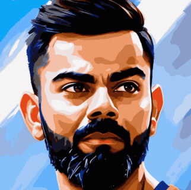
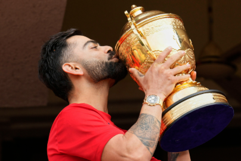
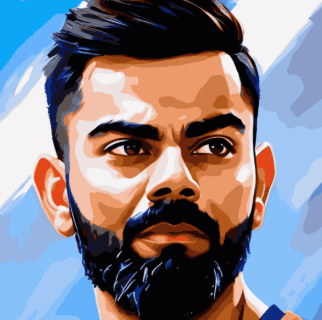
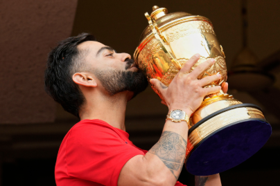
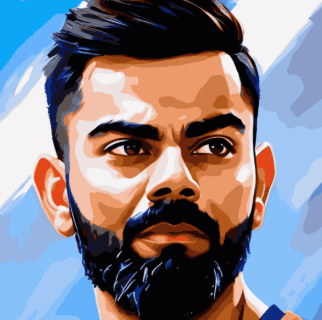
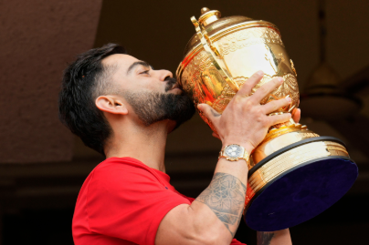

Gallery

 



Modern Era Batting Legend • Run Machine • Chase Master
Virat Kohli was born on 5 November 1988 in Delhi, India. From a very young age, he showed strong interest and discipline in cricket. His father supported his training and enrolled him in a professional cricket academy. Kohli quickly rose through junior cricket because of his technique, confidence, and hunger to score runs.
He first gained major attention when he captained India to victory in the Under-19 World Cup. Soon after, he entered international cricket and built a reputation as one of the most consistent and mentally strong batsmen in the world. He later became captain of India across formats and is known for his fitness culture, aggressive mindset, and match-winning performances.
Kohli made his ODI debut in 2008 and gradually secured his place in the team with reliable performances. His breakthrough came with centuries in overseas conditions, proving his ability outside the subcontinent. Over the years, he became the backbone of India’s batting lineup in run chases.
As captain, he led India to many Test series wins and pushed the team toward a fitness-first approach. Under his leadership, India stayed at the top of Test rankings for a long period. He is also one of the most successful captains in franchise T20 cricket and has been the face of Royal Challengers Bengaluru for many seasons.
Virat Kohli is a right-handed top-order batsman known for timing, balance, and controlled aggression. His cover drive is considered one of the finest shots in modern cricket. He is especially famous for chasing targets under pressure and rotating strike efficiently.
His strengths include:
| Format | Matches | Runs | Centuries | Average | Highest Score |
|---|---|---|---|---|---|
| Tests | 110+ | 8800+ | 29+ | 49+ | 254* |
| ODIs | 290+ | 13800+ | 50+ | 58+ | 183 |
| T20Is | 115+ | 4000+ | 1 | 52+ | 122* |
Kohli has also broken numerous batting records, including fastest milestones in ODI runs and most centuries in successful chases. He is widely regarded as one of the greatest batsmen of his generation.

